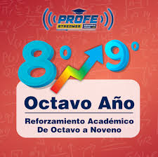

En el octavo grado, los estudiantes se enfocan en temas clave de diversas áreas como Lengua y Literatura,
Matemáticas, Ciencias Naturales, Historia, Geografía y Ciencias Sociales.
En Lengua y Literatura se abordan la comprensión lectora, redacción de ensayos y gramática.
Las Matemáticas incluyen álgebra, geometría y funciones.
Las Ciencias Naturales cubren temas como la célula, el sistema nervioso y digestivo.
Las asignaturas sociales se centran en la Revolución Francesa, civilizaciones antiguas y la historia de la región.
